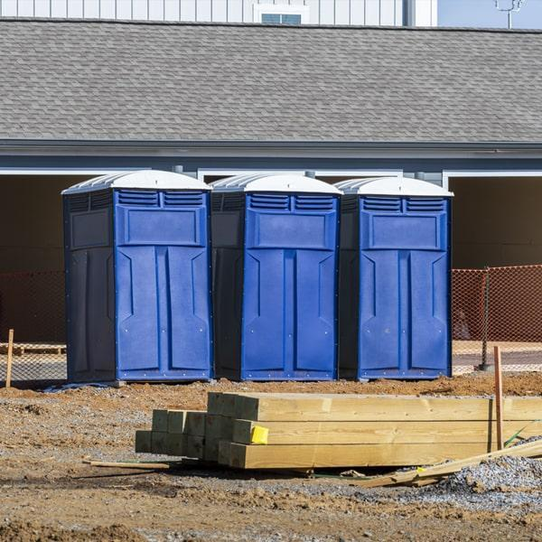

Rugged, jobsite-ready portable restrooms in Edinburg, {state}.

Construction Site Toilets are built for tough environments where crews work long hours and need reliable, sanitary restroom access. These units are designed to handle daily use, offering sturdy construction, proper ventilation, and clean interiors that support worker comfort. They’re commonly used for residential builds, commercial projects, roadwork, infrastructure upgrades, and remodeling jobs throughout the city. Delivery and setup are handled professionally, ensuring the units are placed where they won’t disrupt workflow.
Workers and site managers trust these porta potty rentals because they stay clean, functional, and consistently serviced. Regular maintenance keeps restrooms stocked and ready, which helps crews stay productive without long breaks or unnecessary downtime. The rugged design holds up well in demanding conditions, from dusty job sites to high-traffic areas. Flexible scheduling also makes it simple to increase or reduce the number of units as a project evolves. With reliable placement and prompt servicing, these restrooms support a smoother workday. To arrange construction-ready units for your site, contact today.
Reliable facilities for large jobsites and multi-phase projects.
Keep work crews efficient without indoor access needs.
Durable units for crews working along streets and rights-of-way.
Scaled solutions for plants, yards, and fabrication facilities.
Rugged materials, stable bases, and reliable hardware for daily use.
Same-day and next-day options to meet project schedules.
Weekly pump-outs, restocking, and sanitizing to keep crews happy.
Responsive Edinburg team for placement changes and add-on units.
Not sure how many units your job needs? We’ll recommend a count based on crew size, shifts, and site layout.